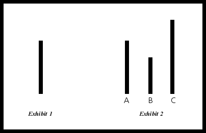

Conformity in Groups
Conformity to groups norms means that someone gives up his own ideas to make it match with those
that are common within the group. All of this roots from the idea of in-groups and
out-groups.
In-groups refer to people who all belong in one reason or another. One person does not only
belong to one group, but to many groups. For example, someone may be student, belonging to
a sorority, but she also belong to the in-group of the whole student body, and the in-group
of all women and all Americans.
Here are examples to show the difference between in-groups and out-groups, and the way people treat those who are in their in groups versus those who are not.
1. A clique of cheerleaders in a high school.
These "popular kids" will be the ones throwing the parties, hanging out together, dressing nice etc. When a new girl comes to the school, she has the choice of joining either the cheeleders, becoming part of the in-group, or not joining them, becoming part of the out-group. To join the cheerleaders she may have to go to the hairdresser and buy some new clothes, in order to be able to conform to the group norms
2. Hungarians and gypsies.
As gypsies belong to a minority group in Hungary, they are often considered as an out-group by many Hungarians. In turn, there are many stereotypes about their culture, especially about their lack of work ethic, their tendencies to steal and cheat, their loudness and their habits of marrying at a very young age and having many children.
RESEARCH:
Asch et al, 1951 - The aim of this study was to look the extent people are willing to conform to
group normas in a non-ambiguous situation.
In this lab experiment, 50 male university students were asked to participate in a vision test. They were shown a line,
and asked to match it to another line that is the same length, out of 3 choices ( as shown on the picture below).
Asch put each participant in a room with 7 confederates ( those who were told what to answer),
but lead the actual participants to believe that the other 7 were also naive participants.
When asked, each person in the room had to state which line matched the original, with the
real participant being the last one to answer. There were all together 18 trial, and 12 out of 18
times the confederates were told to give the wrong answer.
The study found that on average about 32% of the participants conformed to what the rest of the
group said, and about 75% of participants conformed at least once. 225% of participants
never conformed.
This shows that when people are put under pressure by being shown a group norm, they are
likely to conform, even if the anser they are giving is obviously wrong. Based on this,
it is clear that the majority of people value fitting into a group more than actually being correct.

Howarth, 2002: Brixton girls study - The aim of this study was to look whether
the negative stereotypes that are present in London about those living in Brixton are also
present amongst those who live in Brixton.
The study used focus-groups of adolescent girls to see if the general negative representation
affected the identity of these adolescent girls in any way.
The study found that these grils were not affected by the negative views that others have on them,
and said that people living in Brixton formed "a diverse, creative, and vibrant" community.
This showed that being part of the in-group of those who live in Brixton, they were unaffected by the negative
views of others, as their social identity was strong, keeping their views on their group´s behaviour
and performance positive.